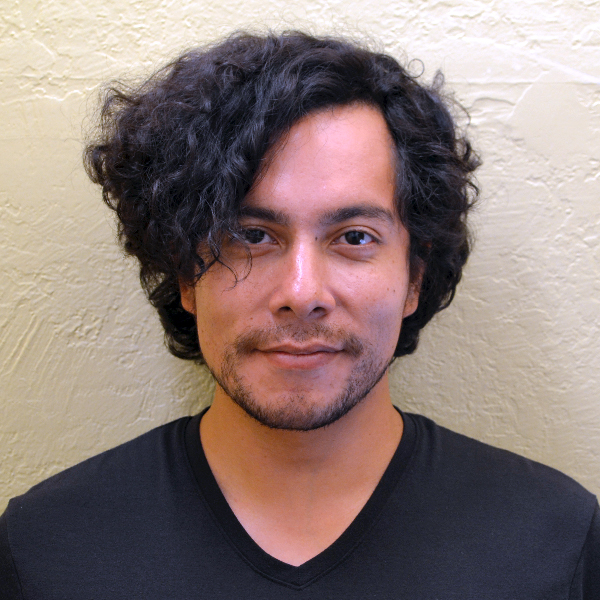

Tony Hernandez
An illustrator at heart, I like trying my hand at new mediums all the time.
Although they don't all stick, I've found a few favorites over the years.
These include film photography, anything to do with paper craft, and painting.
Bicycles are another part of my life that started solely as a means to commute to work,
but after friends introduced me to public rides and races,
I've really come to enjoy cycling with people or alone to new & old places.